Kalendar is a free calendar app for Windows, made for the things you look forward to: the match on Sunday, the season finale, the game you pre-ordered, the cabin weekend.
Download for Windows What's new
Free · Windows 10 and 11 · No account needed
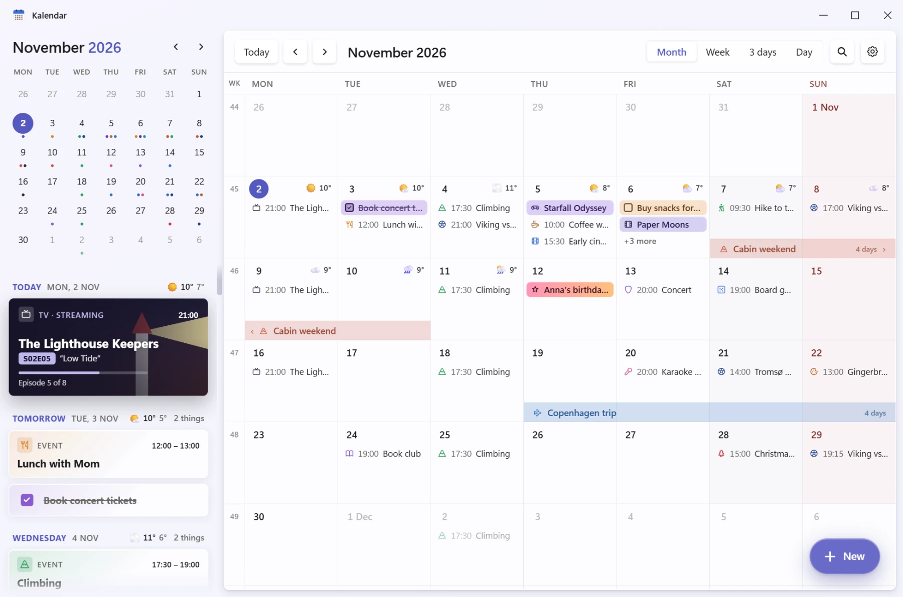
Matches, episodes and releases look like what they are, with pictures, colours and the details that matter. The next few weeks should look like something to look forward to, not a to-do list. Birthdays say how old they turn, with confetti when you click them.
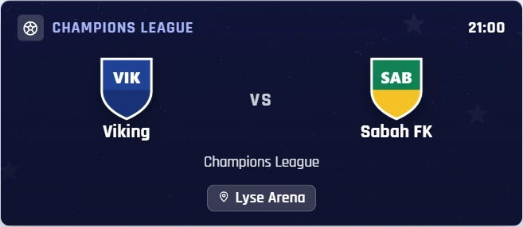
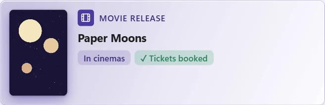
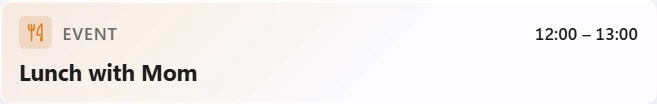
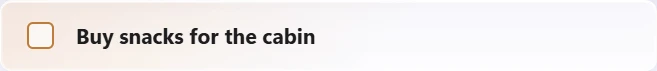
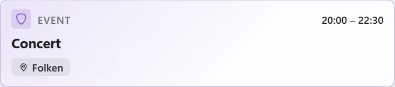
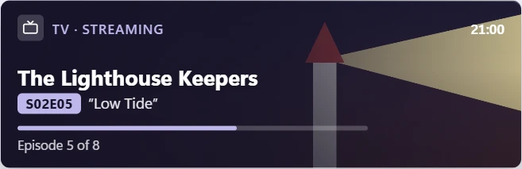
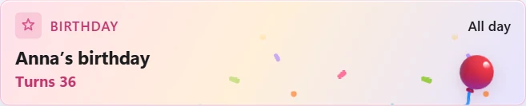
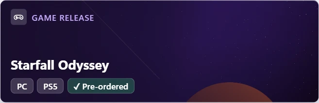
Follow your team's fixtures and results, with logos and kick-off reminders. On match days the app takes your team's colour.
Follow a show and new episodes appear by themselves.
Search a film and get its release date for your country, with poster and summary.
Search a game and get its release date and cover.
"Pizza night friday at 19" fills in the day and the time, and saves as "Pizza night". Press Ctrl+Alt+K from anywhere in Windows, or a shortcut of your own, and it's in your calendar without opening the app.
Every card can have its own icon too, from about 1,900 emoji or 4,800 line icons. Kalendar suggests one as you type.
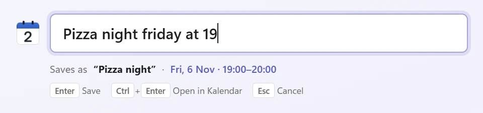
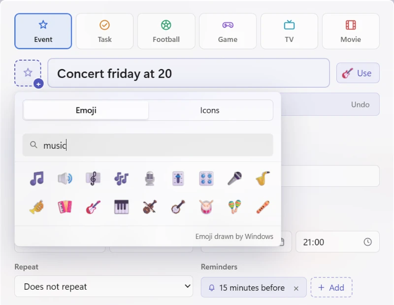
Click anything in your calendar and a small card opens beside it, with the time, place, reminders and notes. Tick off a task right there, or double-click when you want to change something.
And when you can't remember which day it was, Ctrl+F searches titles, places and notes.
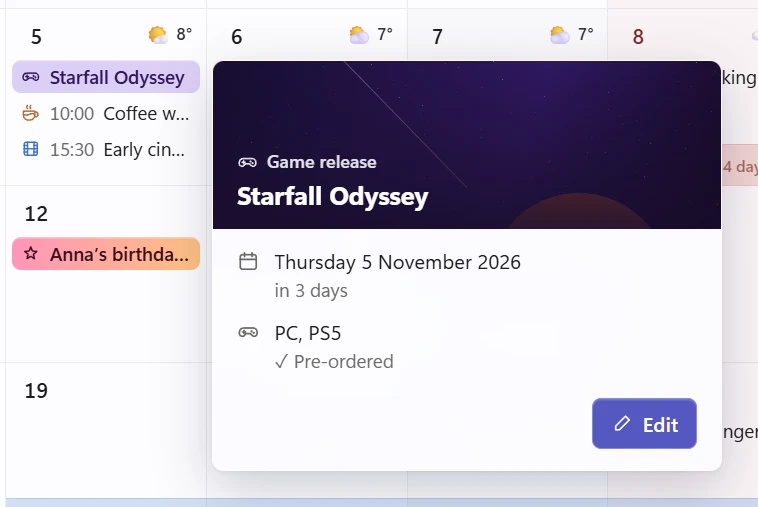
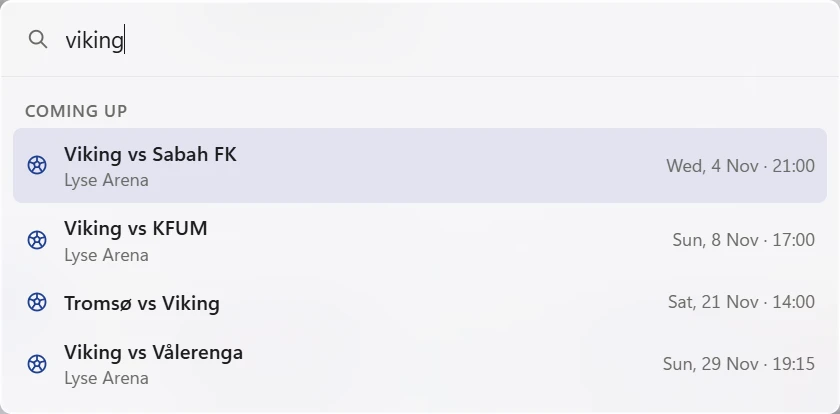
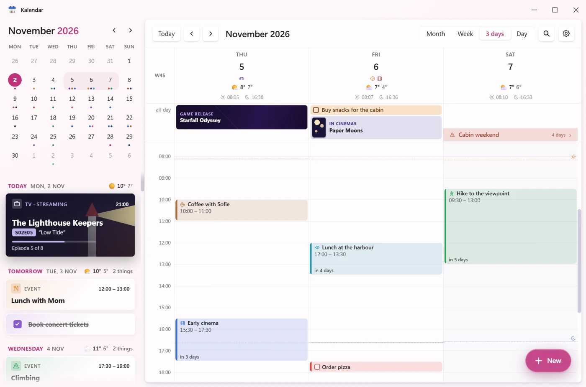
Eight pale gradient themes, or your own colour or gradient. Light or dark, following Windows or your own choice, with as much transparency as you like. All-day events can be soft pastels or solid colours.
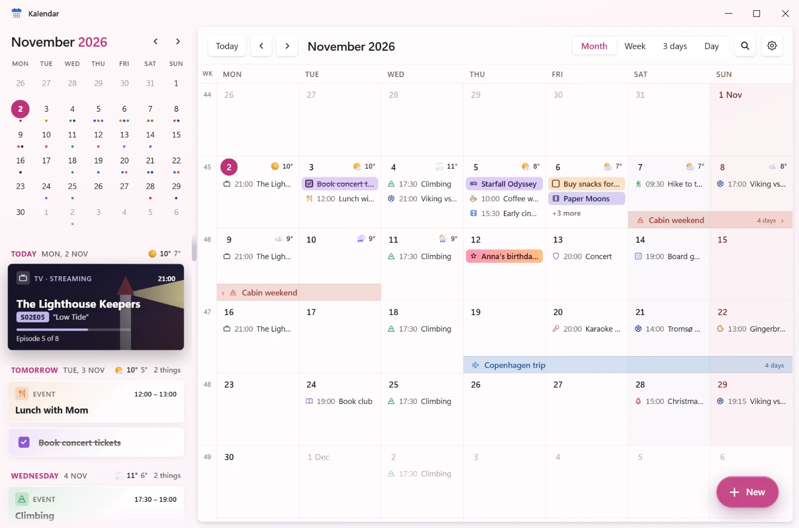
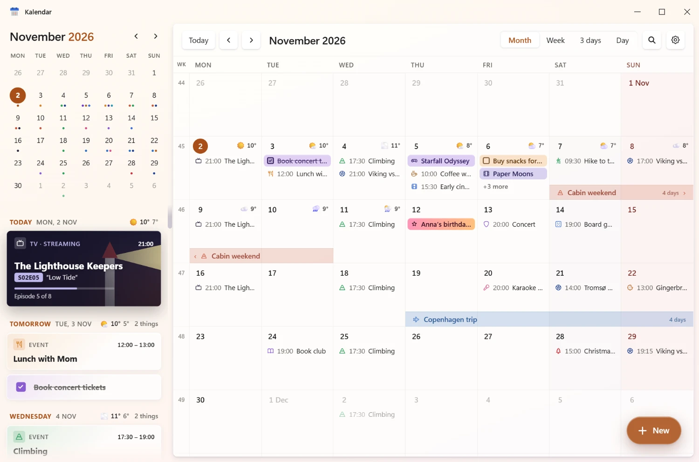
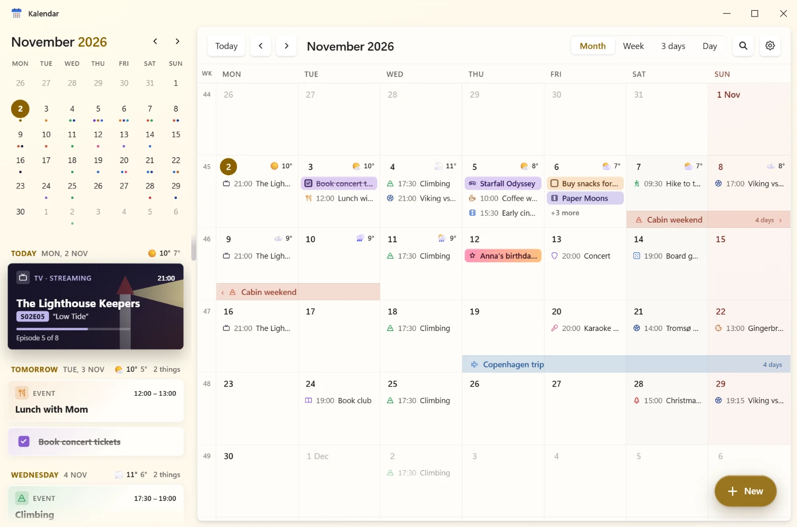
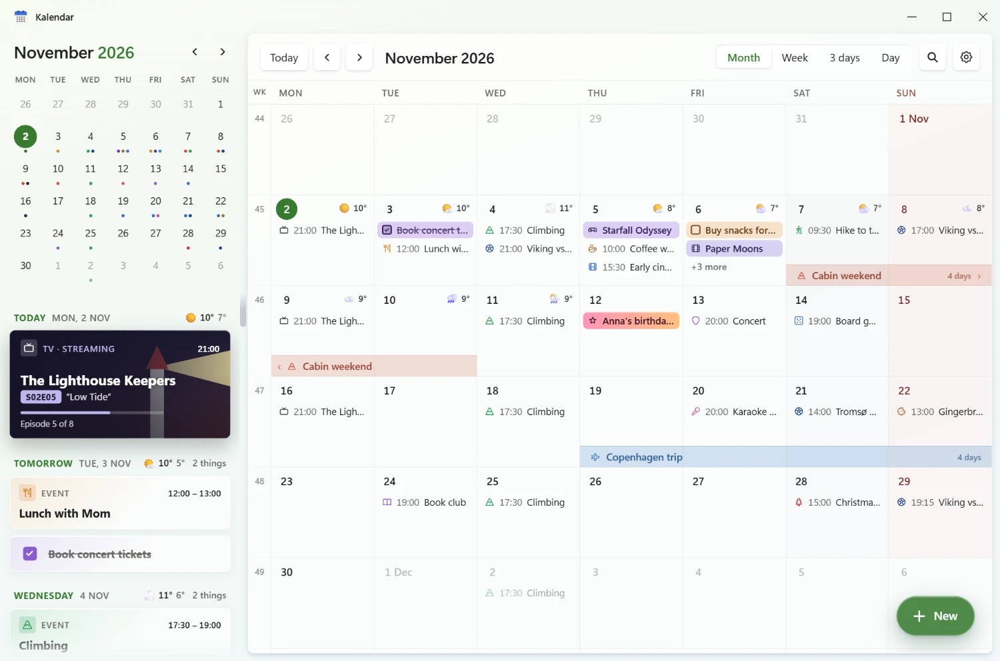
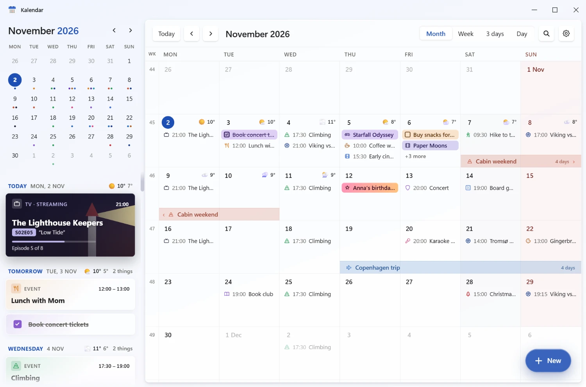
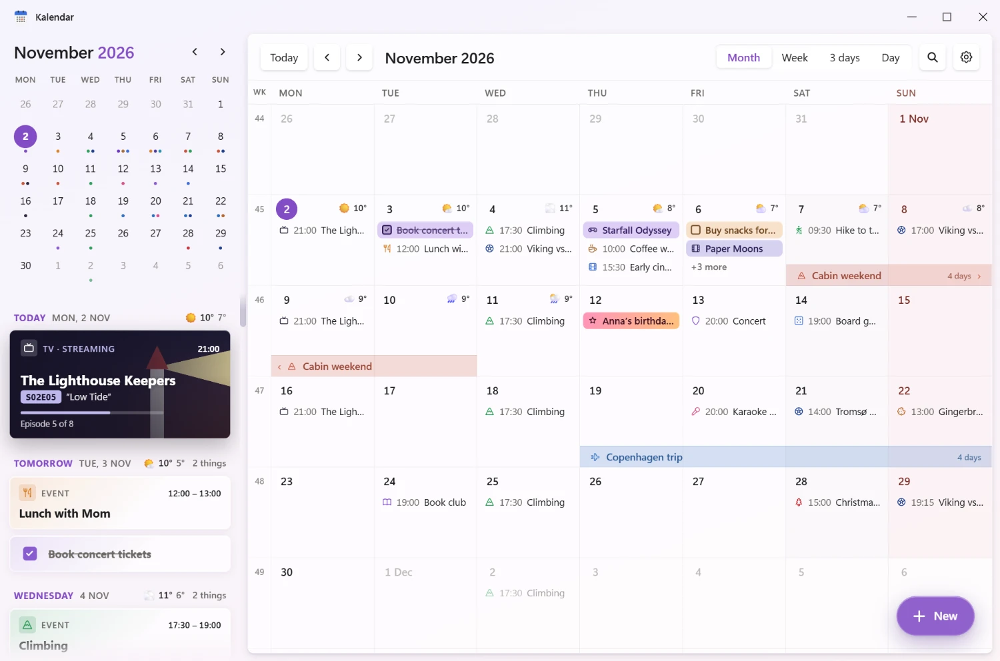
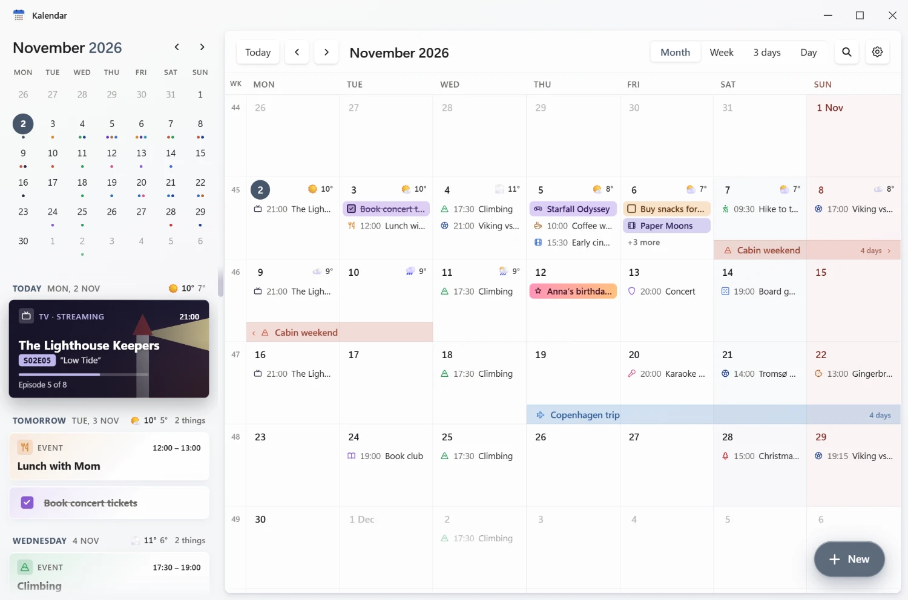
Dark mode gets the same care as light. Match cards, posters and pictures look right at home, and small seasonal touches like confetti at New Year and an optional Christmas theme keep things cosy all year.
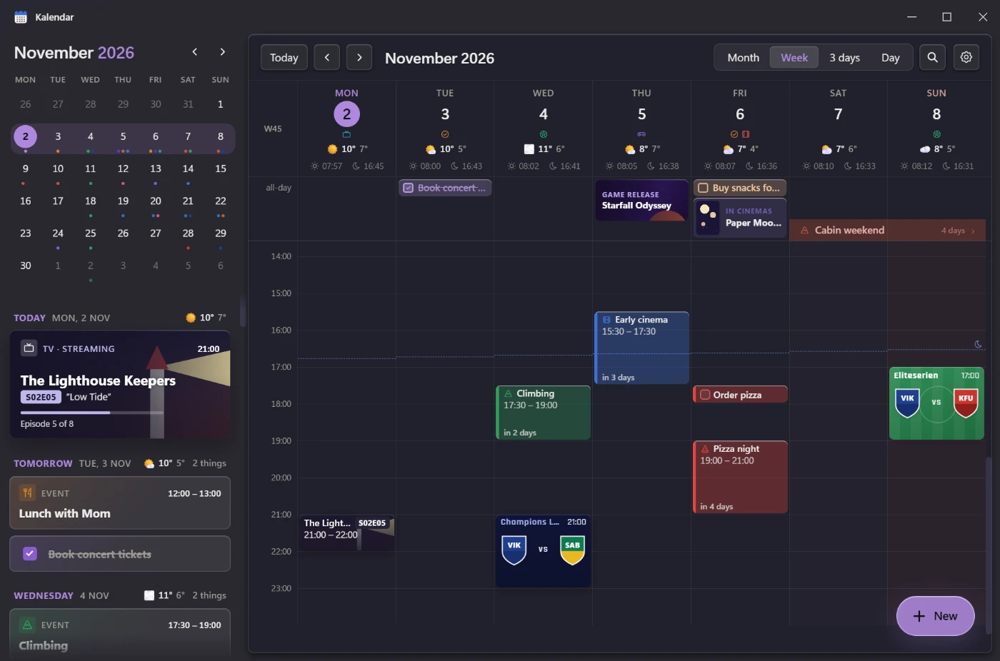
Windows notifications, as many as you like, with snooze. Kalendar waits in the tray, even with the window closed.
If you want it: keep Kalendar and your phone in step, and answer invites from Gmail.
Every day, week, month or year, with single days skippable.
Right-click anything and choose "Count down to this".
Works alongside Outlook, Apple Calendar and others.
Today's date on the icon, a small agenda in the tray, and it can start with Windows.
New versions install themselves when you're ready.
All of it, in both languages.
There is no Kalendar server, no account, no tracking and no ads. Your events, pictures and settings are saved on your own PC, and Kalendar only goes online for the features you choose to use.
Windows may say "Windows protected your PC", because Kalendar is a free hobby app without a paid code-signing certificate. Click More info, then Run anyway.